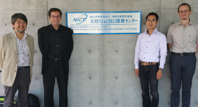
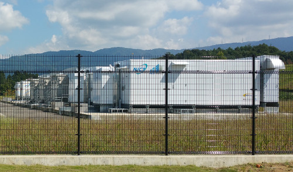

Application Domains
The activities of this project aim to advance the scientific understanding of distributed software-defined cyberinfrastructures and the ability to run scientific applications using data and tools in different countries. Specifically, the targeted applications are in environmental modeling, disaster management and smart and connected communities, focusing on how these domains impact each other.
IT Research
The related middleware research seeks solutions for software-defined data sharing, middleware interoperability via software-definition, and coordinated software-definition of distributed IT systems.
Working Groups and Projects
Click here to know about projects and working groups.
Testbeds and Resources
The following testbeds and systems are available to CENTRA researchers. Click on their acronyms to find out how impressive they are.

-
PRAGMA Experimental Network Testbed (PRAGMA-ENT) - A breakable international software-defined network (SDN) testbed.
-
Japan-wide Orchestrated Smart / Sensor Environment (JOSE) - A testbed with a large number of wireless sensors, SDN capabilities, and distributed “CLOUD” resources.
-
StarBED (StarBED) A large-scale, general-purpose Internet simulator and a testbed that could be used to carry out multiple, large-scale simulations of next-generation networks for performance and dependability studies.
-
The Resilient ICT Research Center (ICT) - A research center of the National Institute of Information and Communication Technology (NICT) of Japan with the mission to realize “connected” and “unbreakable” networks, especially in the case of a disaster, this center aims to advance research into resilient ICT technologies.
-
Research Infrastructure for Large-Scale Network Experiments (RISE) - A New Generation Network Testbed (NICT JGN-X) wide-area SDN testbed including East Asia, Japan, and the US connected via TEIN.

-
National Center for High Performance Computing - Taiwan (NCHC) - A member of the National Applied Research Laboratories (NARLabs) providing national services of compute, storage, and network services to Academia of Taiwan. A total of 200 teraflop compute, 6 petabyte storage, and 100 Gb/s Taiwan Research and Educational Network available.
- Future Internet SDN Testbed - A national SDN testbed based on OpenFlow and connected to iGENI@US and JGN-X@JP
- Software defined systems for real world applications - Flood mitigation, Bridge safety monitoring, Precision agriculture, Earthquake monitoring, Ecosystem monitoring, Human body monitoring
- Stream Analysis - Data streaming from river gauge stations across Taiwan
- Real-time monitoring and analytics services e.g. flood monitoring